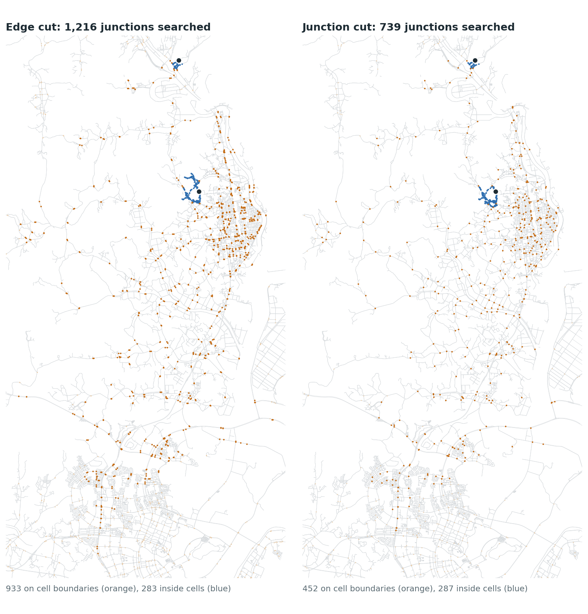

Situation
Precomputing the road network cut compute per route request by 95–99.6%; a contraction hierarchy was the cheapest engine in every city tested
Navigation apps, delivery dispatch and ride-hailing price quotes all ask the same question many times per second: what is the fastest route from A to B on today's road network? The engine that answers it sets two things a business pays for: compute per request, and how quickly the service can take in new travel times. This study runs five exact engines on the same 1,000 requests in each of eleven cities (eight in South Korea, plus London, New York and Tokyo). Every answer is checked against an independently certified shortest path: 22,000 checks, none wrong.
Key findings
Percentages are medians of the per-city reductions.
- Precomputation is the main cost lever. At the median city, plain Dijkstra search used core-hours per billion requests. The best overlay used and a contraction hierarchy .
- A contraction hierarchy was cheapest in cities, using of the best overlay's compute per request at the median city, and it rebuilt the whole network in .
- The case for overlays under live traffic is not settled here. Production engines re-weight overlay cells to take in traffic: OSRM's MLD pipeline, and customizable route planning, which its authors described in 2013 as the core of Bing Maps' routing engine. In this study full overlay rebuilds were slower than contraction rebuilds (median against seconds). Re-weighting alone was not timed; that measurement would decide it.
- Where the map is split matters. Cutting cells at junctions instead of road segments halves the overlay's boundary and lowers mean request time by , at about twice the build time.
- Timing benchmarks can mislead. Up to of a reported short-trip median disappeared when the previous request's cleanup was timed separately. Engine comparisons should report mean cost per request and check for order effects.
Exhibit 1
Overlays cut compute per request by 95–96%; a contraction hierarchy cut it by 99.6%
Core time per route request, indexed to plain Dijkstra in the same city = 100. Log scale. Each dot is one city; the bar marks the median of eleven.
| Engine | Core-hours per billion requests | Mean request, µs | Full rebuild, s |
|---|
Integer-millisecond travel times, the format the contraction hierarchy library requires; on unrounded seconds the other engines' median indices move by less than 0.2. One worker thread on a 4-vCPU Linux CI runner per city; processors differ between cities, so compare engines within a city. Overlays: best of three cell sizes per city, chosen on the same throughput run. Core-hours = 109 ÷ one-worker requests per second ÷ 3,600, from a throughput run that includes worker launch and checking every answer. Mean request time comes from a separate latency run and includes clearing the previous request's state and, for the hierarchy, path reconstruction. Rebuild = partitioning plus all cell distances for one overlay (median of three trials); one contraction run for the hierarchy.
Exhibit 2
At these network sizes a contraction hierarchy rebuilds in seconds; the overlay's update advantage still needs a re-weighting measurement
| Situation | Engine | Evidence |
|---|---|---|
| High request volume; travel times change less often than a rebuild takes | Contraction hierarchy | Cheapest in cities; full rebuild . Measured here. |
| Travel times change faster than a contraction rebuild, or networks far larger than tested | Overlay, cells cut at junctions | OSRM: MLD "calculates routes more slowly than CH, but traffic imports are significantly faster". Customizable route planning (2013) "can incorporate a new metric in less than a second". Here, full overlay rebuilds were slower (median against s); re-weighting alone was not timed. Not settled by this study. |
| Occasional requests, no budget to precompute | Bidirectional Dijkstra | Median cheaper than plain search, but costlier in (index up to , plain Dijkstra = 100). Those are the two cities with the most unreachable pairs; the cause is untested. |
Sources: OSRM traffic wiki (last edited January 2022); Delling, Goldberg, Pajor and Werneck, Customizable Route Planning in Road Networks. The OSRM README recommends MLD by default except for very large distance matrices.
Exhibit 3
Cutting cells at junctions halves the overlay boundary; the request-time gain is largest with small cells and costs twice the build time
Junction cut ÷ edge cut at the same maximum cell size, median of eleven cities. Below 1.00 the junction cut is smaller or faster.
Unrounded travel seconds. An overlay splits the network into cells of at most 256, 1,024 or 4,096 junctions and stores travel times between each cell's boundary points; a request searches its two end cells plus those stored times. An edge cut makes both ends of every cut road segment boundary points; a junction cut places the shared junction on the boundary once. Median request time favours the junction cut in cities at the three cell sizes; small differences may be timing noise.
Exhibit 4
On one Sejong trip, the junction cut halves the boundary work the search must do
Junctions searched for one request (17.4-minute trip at the morning peak), cell size 256. Both overlays return the same certified travel time; plain Dijkstra searches 24,908 junctions for it. Over the six uniform-pair requests exported for Sejong, boundary work falls 51–52% while interior work changes by −18% to +31%.

One disclosed request (index 2 of the fixed 1,000), not an average. Black dots: start and destination. Light orange: boundary junctions not searched. Road data © OpenStreetMap contributors; speeds from the Korea Road Network ETA dataset (KTDB, 2024).
Exhibit 5
Up to 99% of a reported short-trip median disappeared when the previous request's cleanup was timed separately
Median time of short (8-step) requests that follow a long request in the fixed benchmark order: the part that remains with cleanup timed separately, and the part that disappears. Share of reported time.
Search engines reuse memory between requests and clear what the previous request touched at the start of the next call. In the fixed order, short trips followed long ones and carried their cleanup. Reversing the order moved the cost to the other group; preparing each request separately removed it. All 36,000 answers matched in every condition and each request did identical search work. Reversal also changes cache and temporal context, so not every microsecond is attributed to cleanup. Mean cost per request hardly moves (Sejong plain Dijkstra 2,539 µs in fixed order, 2,394 µs with cleanup timed separately). Randomized order is the next experiment. Local Windows laptop measurements, three passes, not comparable with the city runner times.
Exhibit 6
On the Maze-Hard reasoning benchmark, the best published learned result misses 49 of 1,000 mazes by exact match; exact search misses none
Wrong answers per 1,000 test mazes, exact match with the reference path. Learned results as published; where a paper reports several seeds or checkpoints, the best is shown.
Maze-Hard (30×30 grids) is used to test neural reasoning models. Every maze has several shortest paths; the reference always takes the first by the move order Down, Left, Right, Up, a rule found on the training split and then confirmed on all 1,000 test mazes. This repository: µs and of memory per maze on a laptop; µs and with its proof of optimality. Under the looser any-shortest-path measure, LDT reports 99.8% and the hand-built LoopedWSP 100%. On SALSA-CLRS graph tasks the best published models without hints solve at most 0.4% of 1,600-node graphs fully; exact search solves all test graphs. The comparison sets the ceiling these benchmarks allow; it does not measure how well a model learns.
Method and limits
- Workload. 1,000 fixed request pairs per city: half uniform random, half short random walks; 626 identical-endpoint and 596 unreachable pairs over the eleven cities are retained. Three passes; times are per-request means. Every answer checked against a certified shortest-path tree.
- Engines. Plain and bidirectional Dijkstra, two-level overlays under two cut models (this repository, Rust), and the
fast_pathscontraction hierarchy crate, which includes its path reconstruction in the timing. - Not measured. Overlay re-weighting alone; multi-level overlays; memory of the searches and the hierarchy (overlay array sizes are retained); cost in currency. The study is one benchmark run per city on CI runners, with paired engine comparisons inside each city.
- Data. Korea Road Network ETA (CC BY-NC 4.0, weekday morning-peak speeds) and InstructOSM snapshots of about 50,000 junctions for London, New York and Tokyo. Benchmark code cee8c6b.
Full city tables · Request-order study · Overlay method · Maze method and proofs